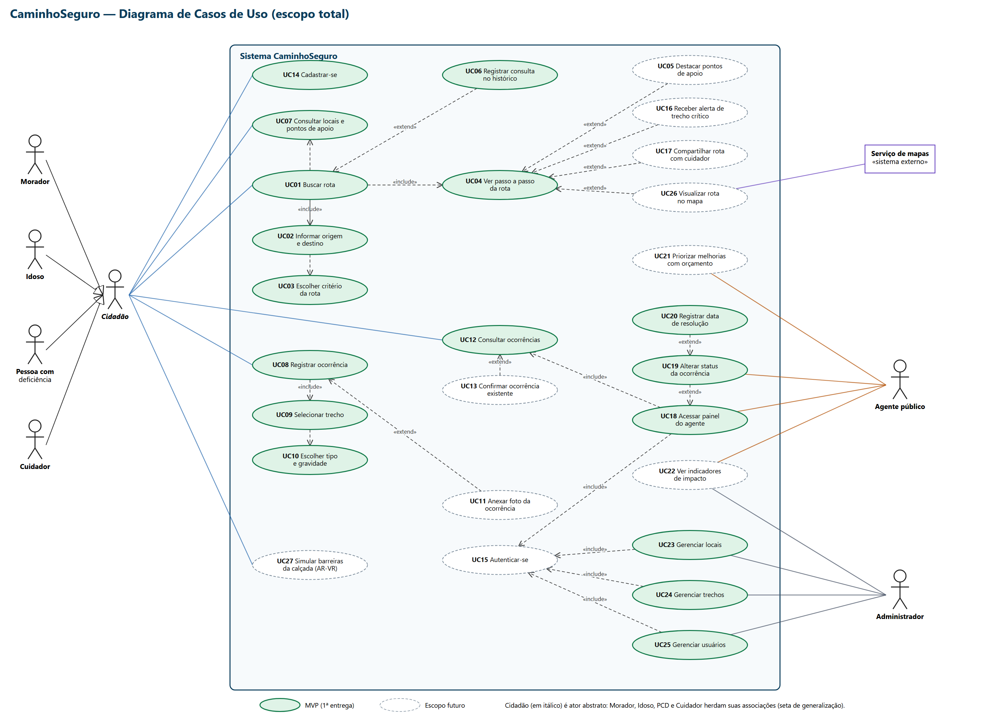

Equipe 1 · Bela Vista, São Paulo/SP
| Integrante | RM |
|---|---|
| Lucas Branquinho | 562262 |
| Vitor Bordalo | 561592 |
Vídeo Pitch (YouTube, não listado):
[LINK DO PITCH]
Repositório: https://github.com/lucasfbranquinho/citizentech-caminhoseguro
| Campo | Resposta |
|---|---|
| Nome | CaminhoSeguro |
| Cidade e bairro | São Paulo/SP, bairro Bela Vista (perto do campus FIAP Paulista) |
| Cidadão beneficiado | Pessoas com mobilidade reduzida e idosos que moram ou circulam na Bela Vista. Personagem: dona Maria, 72 anos (fictícia) |
| Problema | Calçadas irregulares, ladeiras e travessias de risco fazem moradores com mobilidade reduzida desistirem de sair de casa ou correrem risco no caminho |
| Solução | O morador pede uma rota entre dois pontos do bairro e recebe o caminho mais rápido, o mais seguro ou o mais acessível. Os trechos problemáticos são registrados pela comunidade e entram no cálculo das rotas (dados simulados nesta fase) |
| Indicador de impacto | Percentual de trechos do bairro acessíveis e número de rotas acessíveis consultadas por semana |
| ODS | 11, 10 e 3 |
Quem tem mobilidade reduzida decide o dia pelo trajeto. Uma calçada estreita, uma ladeira íngreme ou uma travessia sem tempo suficiente transformam uma ida à UBS ou ao mercado em risco de queda. Muitas pessoas simplesmente deixam de sair, o que afeta autonomia, saúde e convívio social.
Escolhemos esse problema por quatro razões:
Contexto público: o Censo 2022 do IBGE confirma o envelhecimento da população brasileira, o que tende a aumentar a demanda por espaços urbanos acessíveis. A norma ABNT NBR 9050 (acessibilidade a edificações, mobiliário, espaços e equipamentos urbanos) é a referência técnica para dimensões de calçadas e rampas. Por isso o banco guarda, por trecho, a declividade (declividadePct) e a largura da calçada (larguraCalcadaM), que permitem comparar o trecho com a norma. Os valores usados no projeto são simulados.
Por que três critérios? Porque "melhor caminho" depende da pessoa. Quem tem pressa quer o mais rápido. Dona Maria prefere o mais seguro. Um cadeirante precisa do acessível, que descarta trechos inacessíveis e avisa quando não há caminho.
| ODS | Meta | Como o CaminhoSeguro contribui |
|---|---|---|
| 11 Cidades e comunidades sustentáveis | 11.2 Acesso a sistemas de transporte e mobilidade seguros e acessíveis, com atenção a pessoas em situação de vulnerabilidade, pessoas com deficiência e idosos | A rota acessível e a rota segura tornam o deslocamento a pé viável para quem tem mobilidade reduzida |
| 11.7 Acesso universal a espaços públicos seguros, inclusivos e acessíveis, em especial para idosos e pessoas com deficiência | As ocorrências mostram onde a calçada falha e orientam a priorização de melhorias pela subprefeitura | |
| 10 Redução das desigualdades | 10.2 Empoderar e promover a inclusão social de todos, independentemente de deficiência ou idade | Dá autonomia para sair sozinho e participa da vida do bairro; a comunidade tem voz ao registrar problemas |
| 3 Saúde e bem-estar | Contribuição indireta: acesso a serviços de saúde (meta 3.8) e bem-estar (meta 3.4) | Facilita chegar à UBS e estimula caminhar com segurança, reduzindo risco de quedas e isolamento |
Referência: Agenda 2030 da ONU, versão em português do Brasil (ONU Brasil / IPEA). A contribuição é "indireta" e depende de ação do poder público sobre as ocorrências; o app informa, não constrói a obra.
| Pergunta | Resposta |
|---|---|
| 1. Quem é o cidadão beneficiado? | Pessoas com mobilidade reduzida e idosos da Bela Vista (personagem: dona Maria, 72 anos, fictícia) |
| 2. Qual problema será resolvido? | Calçadas irregulares, ladeiras e travessias de risco fazem esses moradores desistirem de sair de casa |
| 3. Como a solução funcionará? | O morador pede uma rota e recebe o caminho mais rápido, o mais seguro ou o mais acessível; a comunidade registra os trechos problemáticos |
| 4. Quais tecnologias serão empregadas? | Python (grafos, Dijkstra, Floyd-Warshall, programação dinâmica), banco de dados relacional, API em Java (DDD) no Render, análise de dados em notebook, simulação AR-VR e rede segmentada no Packet Tracer (VLANs, NAT, ACL, SSH, Wi-Fi WPA2) |
| 5. Quem participará do ecossistema? | Moradores e idosos, a comunidade que registra ocorrências, a UBS e o Centro Comunitário (pontos de apoio e Wi-Fi público), a subprefeitura (responsável por calçadas e rampas) e a equipe de desenvolvimento |
| 6. Como o impacto será medido e ampliado? | % de trechos acessíveis e rotas acessíveis consultadas por semana; ampliar para outros bairros trocando só os dados dos locais e trechos (a tabela de bairros já existe no banco) |
Somos um squad de dois integrantes. Lucas e Vitor dividem os papéis do Scrum no ciclo: ambos atuam como time de desenvolvimento e cada um assume um papel de facilitação por sprint (Product Owner e Scrum Master, alternando no Sprint 2). O backlog (seção 4) é a fonte única de prioridade. Cada sprint tem planejamento, acompanhamento diário curto e revisão. O uso de IA como copiloto está registrado em prompts.md.
Todas as personas abaixo são fictícias, criadas a partir do problema e de conversas informais. Não representam pessoas reais e não contêm dados pessoais reais.
Ator no diagrama: Idoso. Quinta-feira de manhã, dona Maria abre a geladeira e vê que falta quase tudo. O mercado fica a poucas quadras, mas ela pensa na calçada quebrada da esquina e na ladeira de volta, e acaba pedindo entrega, de novo. Com o CaminhoSeguro ela escolhe o mercado como destino, toca em "Mais segura" e sai tranquila, sabendo onde pode parar para descansar.
| Item | Descrição |
|---|---|
| Contexto | Viúva, mora sozinha há 30 anos em um apartamento na Bela Vista, sem elevador, no segundo andar. Aposentada. A filha mora em outro bairro e trabalha o dia todo. |
| Objetivos | Ir sozinha à UBS para consultas e ao mercado todo semana; manter a rotina e a independência; não depender de ninguém para sair. |
| Dores e frustrações | Já tropeçou numa calçada quebrada. Evita ladeiras porque sente falta de ar. Teme atravessar ruas largas sem tempo suficiente. Às vezes desiste de sair e pede entrega, o que a deixa mais isolada. |
| Comportamento com tecnologia | Usa smartphone com WhatsApp e chamadas de vídeo. Letra pequena e muitas opções a confundem. Prefere poucos botões, textos grandes e linguagem simples. |
| Citação | "Eu não tenho medo de caminhar. Tenho medo de cair no meio do caminho." |
| Como o CaminhoSeguro ajuda | Ela escolhe a UBS como destino, toca em "Mais segura" e recebe o trajeto passo a passo, com pontos de apoio (UBS, Centro Comunitário) onde pode descansar. Se vê um buraco, registra a ocorrência em poucos toques. (UC01, UC04, UC05, UC08) |
Ator no diagrama: Pessoa com deficiência. Carlos tem consulta marcada e já aprendeu que o caminho mais curto no mapa nem sempre existe para ele: uma rampa que falta e ele volta quarteirões inteiros. Antes de sair, ele pede uma rota "Mais acessível" e confia na resposta, porque, se não houver caminho viável, o aplicativo diz isso com clareza. No trajeto, avisa sobre um obstáculo e ajuda quem vem depois.
| Item | Descrição |
|---|---|
| Contexto | Analista de suporte, cadeirante desde um acidente. Mora e trabalha perto da Av. Paulista e circula a pé e de transporte público. |
| Objetivos | Chegar ao trabalho, a consultas e ao mercado sem encontrar um trecho intransponível no meio do caminho. Saber antes de sair se há rota acessível. |
| Dores e frustrações | Rampas ausentes ou íngremes, calçadas estreitas, obstáculos. Já teve que voltar quarteirões inteiros e circular pela rua. Aplicativos comuns não dizem se a calçada é viável. |
| Comportamento com tecnologia | Usuário avançado, usa vários aplicativos todos os dias e se incomoda com cadastro longo. Valoriza resposta rápida e informação confiável. |
| Citação | "O mapa me mostra o caminho mais curto. Eu preciso do caminho que existe para mim." |
| Como o CaminhoSeguro ajuda | O critério ACESSIVEL ignora trechos marcados como inacessíveis e, quando não há caminho, diz isso claramente. Ele também registra ocorrências, que passam a pesar nas rotas dos outros. (UC01, UC03, UC08) |
Ator no diagrama: Cuidador. No sábado, Renata leva a mãe à UBS e, na semana, se preocupa quando a mãe quer ir sozinha. Ela abre o CaminhoSeguro, confere o trajeto mais seguro e os pontos de apoio no meio do caminho e, no futuro, poderá compartilhar a rota com a mãe. Se vê um problema na calçada, registra em poucos toques.
| Item | Descrição |
|---|---|
| Contexto | Filha de uma idosa, trabalha em horário comercial e acompanha a mãe nas idas à UBS aos fins de semana. |
| Objetivos | Escolher um trajeto confortável para a mãe; ficar tranquila quando ela vai sozinha; saber onde estão os pontos de apoio. |
| Dores e frustrações | Não sabe como estão as calçadas do bairro da mãe. Se preocupa com a mãe sozinha na rua. Tem pouco tempo para pesquisar. |
| Comportamento com tecnologia | Usa o celular o dia todo, faz tudo por aplicativo, mas só aceita ferramentas diretas, sem tutorial. |
| Citação | "Se eu soubesse que o caminho é bom, eu ficaria mais tranquila de deixar minha mãe ir sozinha." |
| Como o CaminhoSeguro ajuda | Consulta rotas pelo mesmo critério, conhece os pontos de apoio no trajeto e registra problemas que vê. Compartilhar a rota com a mãe está previsto no escopo total (UC17). (UC01, UC04, UC05, UC08) |
Ator no diagrama: Agente público. Patrícia começa o dia com dezenas de pedidos espalhados em planilhas e e-mails, sem saber qual trecho é mais perigoso. No painel do CaminhoSeguro ela filtra as ocorrências abertas, vê trecho, tipo e gravidade, muda o status para "em análise" e, quando a obra termina, marca como resolvida com a data. Assim sabe onde "dói mais" primeiro e mostra o que foi feito.
| Item | Descrição |
|---|---|
| Contexto | Servidora responsável por receber demandas de calçadas, rampas e travessias da região. Tem recursos limitados e muitas solicitações. |
| Objetivos | Saber quais trechos têm problema, quais são mais graves e priorizar as intervenções; mostrar o que foi resolvido. |
| Dores e frustrações | Demandas chegam por canais dispersos, sem localização exata nem gravidade. É difícil comparar e priorizar. Não há retorno claro ao cidadão. |
| Comportamento com tecnologia | Usa sistemas internos e planilhas. Quer filtro simples, lista clara e poucos cliques para atualizar o status. |
| Citação | "Preciso saber onde dói mais primeiro, porque não consigo consertar tudo ao mesmo tempo." |
| Como o CaminhoSeguro ajuda | O painel lista as ocorrências com filtro por status, mostra trecho, tipo e gravidade, e permite mudar para EM_ANALISE ou RESOLVIDA, registrando a data de resolução. (UC12, UC18, UC19, UC20) |

Especificação precisa para desenhar o diagrama (UML). Os casos marcados "fora do MVP" fazem parte do escopo total e aparecem no diagrama, mas não são implementados na primeira entrega.
| Ator | Tipo | Descrição | Perfil na API |
|---|---|---|---|
| Cidadão | Primário, abstrato | Qualquer pessoa que consulta rotas e registra ocorrências. Generaliza os quatro atores abaixo | (generalização) |
| Morador | Primário, especialização de Cidadão | Morador ou frequentador do bairro | MORADOR |
| Idoso | Primário, especialização de Cidadão | Pessoa idosa (persona dona Maria) | IDOSO |
| Pessoa com deficiência | Primário, especialização de Cidadão | Pessoa com deficiência ou mobilidade reduzida (persona Carlos) | PCD |
| Cuidador | Primário, especialização de Cidadão | Quem acompanha ou apoia o idoso ou a pessoa com deficiência (persona Renata) | CUIDADOR |
| Agente público | Primário | Servidor da subprefeitura (persona Patrícia) | AGENTE |
| Administrador | Primário | Equipe do sistema; mantém locais, trechos e usuários. Não é um perfil de usuário da API; os cadastros são feitos pelos endpoints de gestão (nesta fase, pela equipe) | (fora do enum) |
| Serviço de mapas | Secundário (sistema externo) | Fornece o mapa de fundo para visualizar a rota. Fora do MVP | n/a |
Generalização de atores: Morador, Idoso, Pessoa com deficiência e Cuidador especializam Cidadão (herdam todas as associações de Cidadão). Agente público e Administrador são atores independentes.
| ID | Caso de uso | Resumo | Escopo |
|---|---|---|---|
| UC01 | Buscar rota | Obter o caminho entre dois locais segundo um critério | MVP |
| UC02 | Informar origem e destino | Escolher dois locais do bairro | MVP |
| UC03 | Escolher critério da rota | RAPIDA, SEGURA ou ACESSIVEL | MVP |
| UC04 | Ver passo a passo da rota | Lista de locais, tempo total, risco total e se é totalmente acessível | MVP |
| UC05 | Destacar pontos de apoio no caminho | Mostra UBS e Centro Comunitário ao longo da rota | Fora do MVP (Should; a API já devolve o campo pontoApoio, então a tela já destaca como bônus) |
| UC06 | Registrar consulta no histórico | Grava a consulta quando o usuário é identificado (indicador de impacto) | MVP |
| UC07 | Consultar locais e pontos de apoio | Lista de locais, com filtro por ponto de apoio | MVP |
| UC08 | Registrar ocorrência | Relatar um problema em um trecho | MVP |
| UC09 | Selecionar trecho | Escolher o trecho onde está o problema | MVP |
| UC10 | Escolher tipo e gravidade | Tipo da ocorrência (com gravidade padrão sugerida) e gravidade de 1 a 5 | MVP |
| UC11 | Anexar foto da ocorrência | Complementa o relato com imagem | Fora do MVP |
| UC12 | Consultar ocorrências | Lista de ocorrências, com filtro por status | MVP |
| UC13 | Confirmar ocorrência existente | Outro morador confirma que o problema persiste | Fora do MVP |
| UC14 | Cadastrar-se | Cidadão cria seu usuário com perfil | MVP |
| UC15 | Autenticar-se | Login com perfil e permissões | Fora do MVP |
| UC16 | Receber alerta de trecho crítico | Aviso na rota sobre trecho com ocorrência grave aberta | Fora do MVP |
| UC17 | Compartilhar rota com cuidador | Envia a rota a outra pessoa | Fora do MVP |
| UC18 | Acessar painel do agente | Visão das ocorrências para gestão | MVP |
| UC19 | Alterar status da ocorrência | ABERTA, EM_ANALISE ou RESOLVIDA | MVP |
| UC20 | Registrar data de resolução | Ao resolver, grava a data (não pode ser anterior ao registro) | MVP |
| UC21 | Priorizar melhorias com orçamento | Escolhe as melhorias de maior benefício dentro de um orçamento (problema da mochila, em Python) | Fora do MVP |
| UC22 | Ver indicadores de impacto | % de trechos acessíveis e rotas acessíveis por semana | Fora do MVP |
| UC23 | Gerenciar locais | Cadastrar, consultar, editar e excluir locais | MVP |
| UC24 | Gerenciar trechos | Cadastrar, consultar, editar e excluir trechos | MVP |
| UC25 | Gerenciar usuários | Cadastrar, consultar, editar e excluir usuários | MVP |
| UC26 | Visualizar rota no mapa | Exibe a rota sobre um mapa | Fora do MVP |
| UC27 | Simular barreiras da calçada (AR-VR) | Visualiza em simulação as barreiras de um trecho | Fora do MVP |
| Ator | Casos de uso |
|---|---|
| Cidadão (e, por herança, Morador, Idoso, PCD, Cuidador) | UC01, UC07, UC08, UC12, UC14, UC27 (UC13 e UC17 são alcançados pelas extensões de UC12 e UC04) |
| Agente público | UC18, UC19, UC21, UC22 (UC12 é alcançado pelo include de UC18; UC15 pelos includes) |
| Administrador | UC22, UC23, UC24, UC25 (UC15 é alcançado pelos includes) |
| Serviço de mapas (secundário) | UC26 |
«include» (obrigatório, o caso base chama o incluído):
| Base | Incluído | Observação |
|---|---|---|
| UC01 Buscar rota | UC02 Informar origem e destino | |
| UC01 Buscar rota | UC03 Escolher critério | |
| UC01 Buscar rota | UC04 Ver passo a passo | Resultado da busca |
| UC02 Informar origem e destino | UC07 Consultar locais | Os locais vêm da lista |
| UC08 Registrar ocorrência | UC09 Selecionar trecho | |
| UC08 Registrar ocorrência | UC10 Escolher tipo e gravidade | |
| UC18 Acessar painel do agente | UC12 Consultar ocorrências | |
| UC18, UC23, UC24, UC25 | UC15 Autenticar-se | Fora do MVP; no MVP não há login |
«extend» (opcional, a seta parte do caso que estende para o caso base):
| Extensão | Base | Condição |
|---|---|---|
| UC06 Registrar consulta no histórico | UC01 Buscar rota | Quando o usuário é identificado |
| UC05 Destacar pontos de apoio | UC04 Ver passo a passo | Quando a rota passa por ponto de apoio |
| UC16 Receber alerta de trecho crítico | UC04 Ver passo a passo | Quando há ocorrência ABERTA com gravidade 4 ou 5 no caminho |
| UC17 Compartilhar rota com cuidador | UC04 Ver passo a passo | Quando o usuário escolhe compartilhar |
| UC26 Visualizar rota no mapa | UC04 Ver passo a passo | Quando o mapa está disponível |
| UC11 Anexar foto | UC08 Registrar ocorrência | Quando o usuário quer anexar imagem |
| UC13 Confirmar ocorrência existente | UC12 Consultar ocorrências | Quando o usuário vê uma ocorrência que também presencia |
| UC19 Alterar status da ocorrência | UC18 Acessar painel do agente | Quando o agente seleciona uma ocorrência (ponto de extensão: "ocorrência selecionada") |
| UC20 Registrar data de resolução | UC19 Alterar status | Quando o novo status é RESOLVIDA |
Generalização de casos de uso: não utilizada, para manter o diagrama simples.
| UC | Recurso da API |
|---|---|
| UC01 a UC04, UC06 | GET /api/rotas?origem&destino&criterio&usuario (grava em T_CS_ROTA_CONSULTA quando usuario vem) |
| UC07 | GET /api/locais (filtro ?pontoApoio=true) |
| UC08 a UC10 | POST /api/ocorrencias, GET /api/tipos-ocorrencia, GET /api/trechos |
| UC12, UC18 | GET /api/ocorrencias (filtro ?status=ABERTA) |
| UC19, UC20 | PUT /api/ocorrencias/{id} (status e dataResolucao) |
| UC14, UC25 | /api/usuarios (CRUD) |
| UC23 | /api/locais (CRUD) |
| UC24 | /api/trechos (CRUD) |
Formato: Como <persona>, quero <ação>, para <benefício>.
| ID | História | UC | Critérios de aceite | MoSCoW | SP |
|---|---|---|---|---|---|
| US01 | Como dona Maria, quero ver a lista de locais do bairro (UBS, mercado etc.), para escolher de onde saio e aonde vou | UC02, UC07 | Lista traz nome e se é ponto de apoio; é possível filtrar por ponto de apoio; origem e destino selecionáveis | Must | 3 |
| US02 | Como dona Maria, quero pedir uma rota pelo critério mais rápida, mais segura ou mais acessível, para sair com a opção que combina comigo | UC01, UC03 | Os três critérios retornam rota; resposta traz tempo total, risco total e se é totalmente acessível; pesos conforme as regras da seção 3.5 | Must | 8 |
| US03 | Como dona Maria, quero ver o passo a passo da rota, para seguir o caminho com segurança | UC04 | Lista os locais na ordem; mostra tempo total e risco total; texto grande e simples | Must | 5 |
| US04 | Como Carlos, quero uma mensagem clara quando não existir rota acessível, para não perder tempo e saber o motivo | UC01 | Sem caminho acessível: "Não há rota acessível entre X e Y"; origem igual ao destino é recusada com mensagem explicativa | Must | 2 |
| US05 | Como equipe do CaminhoSeguro, quero que as consultas de rota fiquem registradas, para calcular as rotas acessíveis consultadas por semana | UC06 | Quando usuario é informado, a consulta é gravada com critério, locais, tempo e data |
Must | 2 |
| US06 | Como Carlos, quero que trechos com ocorrência grave aberta pesem na rota, para que a comunidade influencie o caminho que me é sugerido | UC01 | Trecho com ocorrência ABERTA de gravidade 4 ou 5 recebe +5 nos critérios SEGURA e ACESSIVEL; ao resolver, volta ao peso normal | Must | 3 |
| US07 | Como Renata, quero registrar um problema em um trecho, para alertar a comunidade e a subprefeitura | UC08, UC09 | Escolhe o trecho; informa tipo, gravidade (1 a 5) e descrição; ocorrência nasce ABERTA com data de registro; confirmação ao usuário | Must | 5 |
| US08 | Como dona Maria, quero escolher o tipo de problema em uma lista com gravidade sugerida, para registrar sem precisar descrever tudo | UC10 | Lista de tipos traz descrição e gravidade padrão; a gravidade pode ser ajustada | Must | 2 |
| US09 | Como Patrícia, quero ver as ocorrências no painel e filtrar por status, para saber o que precisa de atenção | UC12, UC18 | Lista com trecho, tipo, gravidade e status; filtro por ABERTA, EM_ANALISE e RESOLVIDA | Must | 3 |
| US10 | Como Patrícia, quero mudar o status de uma ocorrência e registrar a data de resolução, para mostrar o que foi tratado | UC19, UC20 | Altera para EM_ANALISE ou RESOLVIDA; ao resolver, grava a data; data anterior ao registro é recusada com mensagem | Must | 5 |
| US11 | Como administrador, quero cadastrar, editar e excluir locais, para manter o mapa do bairro atualizado | UC23 | Campos nome, endereço, tipo, coordenadas e ponto de apoio; local com trechos não pode ser excluído | Must | 3 |
| US12 | Como administrador, quero cadastrar, editar e excluir trechos, para representar as calçadas entre os locais | UC24 | Informa origem, destino, tempo, risco (0 a 10), acessível, declividade e largura; origem diferente de destino | Must | 3 |
| US13 | Como morador, quero criar meu usuário com meu perfil (idoso, pessoa com deficiência, cuidador ou morador), para usar o aplicativo e registrar ocorrências | UC14, UC25 | Nome, e-mail e perfil obrigatórios; e-mail repetido é recusado; administrador pode listar, editar e excluir | Must | 3 |
| US14 | Como equipe, quero validações e mensagens de erro padronizadas, para que o usuário entenda o que corrigir | UC08, UC23, UC24, UC25 | Campos inválidos indicam qual campo; recurso inexistente informa o id; conflito e regra de negócio têm mensagem própria | Must | 3 |
| US15 | Como Renata, quero ver os pontos de apoio destacados no passo a passo, para planejar onde a minha mãe pode descansar | UC05 | Pontos de apoio aparecem destacados na lista de locais da rota | Should | 2 |
| US16 | Como Patrícia, quero entrar com login e ter acesso apenas ao que meu perfil permite, para que só agentes alterem o status | UC15 | Login por perfil; painel só para AGENTE; cadastros só para administrador | Should | 8 |
| US17 | Como Patrícia, quero ver indicadores (% de trechos acessíveis e rotas acessíveis por semana), para acompanhar o impacto | UC22 | Dois indicadores calculados a partir dos dados do banco | Should | 5 |
| US18 | Como Carlos, quero ver a rota sobre um mapa, para entender melhor o caminho | UC26 | Rota desenhada sobre o mapa de um serviço externo | Could | 8 |
| US19 | Como Renata, quero anexar uma foto ao registrar um problema, para que a subprefeitura veja o problema | UC11 | Foto opcional anexada à ocorrência, com limite de tamanho | Could | 5 |
| US20 | Como Renata, quero compartilhar a rota com a minha mãe, para que ela a receba no celular | UC17 | Envio de link ou mensagem com a rota escolhida | Could | 3 |
| US21 | Como morador, quero confirmar que uma ocorrência continua existindo, para reforçar a prioridade | UC13 | Confirmação única por usuário; contador visível ao agente | Could | 3 |
| US22 | Como Carlos, quero ser avisado se a rota passa por trecho com problema grave aberto, para decidir se sigo ou mudo de caminho | UC16 | Aviso na rota listando os trechos com ocorrência ABERTA de gravidade 4 ou 5 | Could | 3 |
| US23 | Como Patrícia, quero um cálculo das melhorias de maior benefício dentro do orçamento, para priorizar as obras | UC21 | Dado um orçamento, indica o conjunto de melhorias de maior benefício (mochila). Existe em Python como estudo; integração ao aplicativo fica para depois | Won't (desta vez) | 13 |
| US24 | Como dona Maria, quero ver uma simulação (AR-VR) das barreiras de um trecho, para me preparar antes de sair | UC27 | Simulação do trecho com barreiras. A simulação existe como entrega separada de AR-VR; integração ao aplicativo fica para depois | Won't (desta vez) | 13 |
Resumo: 24 histórias | 14 Must | 3 Should | 5 Could | 2 Won't.
Participantes: Lucas Branquinho e Vitor Bordalo (time de desenvolvimento). Escala: 1, 2, 3, 5, 8, 13. Método: para cada história, o PO lê e responde dúvidas; cada um escolhe uma carta em segredo; reveladas juntas. Se houver divergência, quem votou o maior e o menor explicam e vota-se de novo, até o consenso.
História de referência = 3 pontos: US01 (listar locais do bairro para escolher origem e destino): consulta simples a um recurso, com um filtro e uma tela de seleção. As demais foram comparadas com ela ("é maior, igual ou menor que a US01?").
Exemplo de rodada com divergência (US02, buscar rota por critério):
| Rodada | Lucas | Vitor | Discussão |
|---|---|---|---|
| 1 | 8 | 5 | Vitor: "Dijkstra a gente já viu em Dynamic Programming, é adaptar." Lucas: "São três pesos diferentes, trechos bidirecionais, descarte dos trechos inacessíveis, mensagem de erro, mais o +5 das ocorrências graves. E precisa testar cada critério." |
| 2 | 8 | 8 | Vitor concorda que os casos de borda dobram o trabalho |
| Consenso | 8 | Registrado no backlog |
Exemplo sem divergência (US07, registrar ocorrência): 5 e 5. Justificativa: três validações (trecho, usuário e tipo), regra de status inicial e tela com formulário, maior que a US01 e menor que a US02.
Exemplo de outro consenso (US10, mudar status): Lucas 3, Vitor 5. Vitor lembrou da regra da data de resolução e da mensagem de erro; Lucas aceitou. Consenso: 5.
O MVP reúne as 14 histórias Must (US01 a US14).
| Bloco | Histórias | Pontos |
|---|---|---|
| Rotas | US01, US02, US03, US04, US05, US06 | 3 + 8 + 5 + 2 + 2 + 3 = 23 |
| Ocorrências e painel do agente | US07, US08, US09, US10 | 5 + 2 + 3 + 5 = 15 |
| Cadastros e validações | US11, US12, US13, US14 | 3 + 3 + 3 + 3 = 12 |
| Total do MVP | 14 histórias | 50 pontos |
Meta de capacidade: cerca de 25 pontos por sprint (duas pessoas).
| Sprint | Meta | Histórias | Pontos |
|---|---|---|---|
| Sprint 1 | "Dados e rota funcionando": cadastros e rota por critério | US11, US12, US13 (cadastros); US01 (locais); US02 (rota); US04 (mensagens); US05 (histórico) | 3 + 3 + 3 + 3 + 8 + 2 + 2 = 24 |
| Sprint 2 | "Passo a passo, ocorrências e painel": comunidade e agente | US03 (passo a passo); US06 (+5 por ocorrência grave); US07 e US08 (registrar ocorrência); US09 e US10 (painel); US14 (validações) | 5 + 3 + 5 + 2 + 3 + 5 + 3 = 26 |
| Total | 14 histórias | 50 |
Justificativa da ordem: sem locais e trechos cadastrados não há rota, então os cadastros vão primeiro. As ocorrências dependem de trechos e usuários, e a regra +5 depende de ocorrências, por isso ficam no Sprint 2. As validações (US14) são aplicadas ao longo dos dois sprints e fechadas no Sprint 2.
Definição de pronto: critérios de aceite atendidos, testado manualmente com os dados simulados, coerente com o contrato da API e com o banco, e revisado pelo outro integrante.
O protótipo do CaminhoSeguro apresenta quatro telas que cobrem os dois fluxos principais: o do cidadão (pedir rota e registrar problema) e o da agente (tratar ocorrências). As telas foram pensadas para dona Maria: poucos elementos por tela, letras grandes, contraste alto e linguagem simples (sem "grafo", "peso" ou "trecho técnico"). Cada tela é mostrada abaixo, seguida dos comentários de intenção e de adequação da UX.
<label> em cada seleção; validação própria com mensagem junto do campo e resumo em role="alert"; o foco vai ao primeiro campo com problema; destino igual à origem é bloqueado com texto claro. Nenhuma cor sozinha indica erro (ícone e frase).

aria-live="polite" e o foco vai para o título ao carregar; cada passo tem "Passo N" para leitor de tela; informação de acessibilidade nunca depende só de cor.

<fieldset> e <legend> para os grupos de rádio; erro junto de cada grupo e resumo em role="alert"; foco no primeiro problema; botão muda para "Enviando..." e fica desativado para evitar envio duplicado; a confirmação recebe o foco e é anunciada.

aria-live; após salvar, o foco volta ao botão do cartão alterado; tabelas foram evitadas em favor de cartões, que funcionam melhor em tela pequena e com leitor de tela.Narradores: Lucas (L) e Vitor (V). Fala total: cerca de 315 palavras (≈ 2 min 05 s em ritmo calmo), dentro do limite de 2 min 50 s de fala; o restante é pausa e transições. Duração total prevista: 2 min 55 s.
| Cena | Tempo | O que aparece na tela | Narração |
|---|---|---|---|
| 1. Problema | 0:00 a 0:20 | Foto ou ilustração de calçada quebrada e ladeira na Bela Vista; texto "Bela Vista, São Paulo" | L: "Imagine ter 72 anos e querer ir sozinha à UBS. Na Bela Vista, calçada quebrada, ladeira e travessia perigosa fazem muita gente desistir de sair de casa. Esse é o problema que a gente quis resolver." |
| 2. Cidadão | 0:20 a 0:40 | Ilustração de dona Maria; selo "personagem fictícia"; ao lado, Carlos e Renata | V: "Esta é a dona Maria, personagem fictícia de 72 anos. Ela quer ir sozinha ao mercado e à UBS, mas não sabe qual caminho é seguro para ela. O CaminhoSeguro é para ela, para cadeirantes e para cuidadores." |
| 3. Solução funcionando | 0:40 a 1:30 | Tela 1 (escolher origem, destino e critério); Tela 2 (resultado com passo a passo, tempo, risco, pontos de apoio); Tela 3 (registrar problema); Tela 4 (painel da agente mudando o status) | L: "Na tela inicial, ela escolhe de onde sai, aonde vai e como quer ir: mais rápida, mais segura ou mais acessível. Recebe o caminho passo a passo, com tempo, risco e pontos de apoio." V: "Se vê um buraco, registra o problema em poucos toques. A agente da subprefeitura vê no painel, muda o status para em análise ou resolvida, e os problemas graves passam a pesar nas próximas rotas." |
| 4. Tecnologia (7 disciplinas) | 1:30 a 2:15 | Slide com sete ícones, um por disciplina, aparecendo em sequência | V: "Em Agile, organizamos o trabalho em backlog e dois sprints. Em Database, um banco relacional guarda locais, trechos e ocorrências. Em DDD Java, uma API no Render entrega rotas e ocorrências." L: "Em Dynamic Programming, o Dijkstra calcula as rotas e a mochila prioriza melhorias com orçamento. Em Data Science, analisamos as ocorrências por trecho. Em AR-VR, simulamos as barreiras da calçada. Em Network, uma rede com VLANs, NAT, ACL e SSH conecta equipe e servidor." |
| 5. Impacto e ODS | 2:15 a 2:40 | Dois indicadores em destaque; logos dos ODS 11, 10 e 3; frase "Outro bairro: trocar os dados" | L: "Medimos o impacto por dois indicadores: o percentual de trechos acessíveis e o número de rotas acessíveis consultadas por semana. Isso apoia os ODS 11, 10 e 3: cidade acessível, menos desigualdade e mais bem-estar. Para outro bairro, basta trocar os dados." |
| 6. Fechamento | 2:40 a 2:55 | Logo CaminhoSeguro, nomes, RMs, turma 2ESPH, equipe 1, link do repositório | V: "Os dados desta fase são simulados, mas a solução funciona. Somos Vitor Bordalo e Lucas Branquinho, equipe 1, turma 2ESPH." Ambos: "CaminhoSeguro: sair de casa com segurança." |
| Disciplina | Papel no CaminhoSeguro |
|---|---|
| Agile | Backlog, sprints e pitch |
| Database | 8 tabelas T_CS (bairro, tipo de local, local, trecho, usuário, tipo de ocorrência, ocorrência, consulta de rota), com DDL, DML e DQL em Oracle |
| DDD Java | API REST descrita no contrato (/api/rotas, /api/ocorrencias, ...) |
| Dynamic Programming | Dijkstra e Floyd-Warshall para rotas; mochila para melhorias com orçamento |
| Data Science | Análise de ocorrências por trecho |
| AR-VR | Simulação da rota e das barreiras |
| Network | Rede segmentada: VLANs, NAT, ACL, SSH, Wi-Fi WPA2 |
O briefing pede conversar com alguém que convive com o problema. Sugestão de roteiro (10 a 15 minutos). Antes de começar, explicar o objetivo e pedir permissão; não registrar nome, endereço, telefone nem outros dados pessoais no trabalho (identificar apenas como "moradora, 70+ anos", por exemplo).
| # | Pergunta |
|---|---|
| 1 | Com que frequência o(a) senhor(a) sai de casa a pé e para onde costuma ir? |
| 2 | Já deixou de sair ou mudou de planos por causa da calçada, da ladeira ou de uma travessia? Pode contar uma situação? |
| 3 | Qual é o pior trecho do seu caminho e o que o torna difícil? |
| 4 | Já caiu, tropeçou ou passou perto disso? O que aconteceu? |
| 5 | Como o(a) senhor(a) escolhe o caminho hoje? Usa aplicativo, pergunta a alguém, segue o costume? |
| 6 | O que preferiria: o caminho mais rápido, o mais seguro ou o mais plano? Por quê? |
| 7 | Se existisse um aplicativo que mostrasse rotas seguras e permitisse avisar sobre um buraco, usaria? O que ele precisaria ter para ser fácil? |
| 8 | Já tentou avisar a prefeitura sobre um problema na calçada? Como foi? |
[RESPOSTAS]
(O aluno preenche após a conversa: perfil resumido e anônimo da pessoa, principais frases, o que surpreendeu e o que mudaria no projeto.)